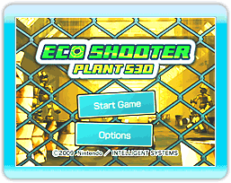

Elige Eco Shooter: Plant 530 desde el Menú de Wii, después selecciona Comenzar para ir a la pantalla del título. Oprime

o

para ir al menú principal. Apunta a la opción que desees y confirma oprimiendo
o
.
 |
 |
 |
 |
Cómo guardar
La primera vez que juegues este juego aparecerá un mensaje de guardado. Apunta a OK para confirmar oprimiendo o .
Un bloque de memoria es necesario para guardar los datos. En este juego los datos se guardan automáticamente al completar una fase o al hacer cambios en el menú de opciones.
Si deseas borrar los datos guardados, por favor, consulta el manual de operaciones de la consola Wii. Cuando borres los datos estos no podrán ser recuperados, así que ten cuidado.
Nota: Solo se puede guardar un archivo.
|
Nota:
Las siguientes acciones podrían provocar que no se guardara el progreso o que se perdieran los datos guardados. ¡No podrás recuperar los datos, así que ten cuidado!
-
Si oprime RESET o apaga la consola Wii o el Wii Remote mientras los datos están siendo almacenados.
-
Si desconecta el Adaptador de Corriente Wii de su consola Wii mientras está encendida.
|
|
 |
 |
 |
 |